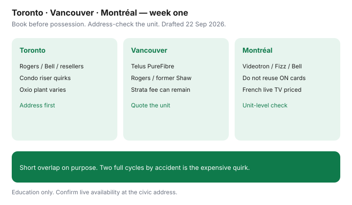

Internet · Canada
First-Week Internet Setup in Toronto, Vancouver, or Montréal: City Quirks That Cost Money
The first week in a Toronto, Vancouver, or Montréal apartment is when rushed installs, building deals you did not read, and the wrong last-mile technology cost real money. National move advice still applies — transfer, pause, or switch — but each city has quirks that turn a “quick hookup” into a double bill or a dead ethernet jack. This is a cost-avoidance checklist for the first seven days. It is not a live availability map.
Disclosure: Education only. ISP plans in these cities are offer types. Saving Optimizer does not claim a partnership with Rogers, Bell, Telus, Videotron, Fizz, TekSavvy, Oxio, or Novus. Confirm unit-level quotes.
Key takeaways
- Book the install before move-in day. In these markets, popular windows disappear one to two weeks out.
- Address-check fibre versus cable (and Québec Videotron plant) at the unit — not the building marketing suite.
- Condo and strata bulk fees can remain even after you bring your own ISP. Read the lease and the rights guide.
- Avoid two full billing cycles: set a short, deliberate overlap or a pause. Return old gear with a receipt.
- Use city shortlists at a high level, then the Toronto, Vancouver, and Montréal deep guides for 24-month math.
Book installs before move-in day in each city
Possession day without internet is expensive if you work from home. Pattern that works in all three cities:
- As soon as the lease or closing is firm, run availability at the unit number, not the street only.
- Book the earliest install on or just before move-in. Ask the landlord, superintendent, or strata for access if you need the afternoon before.
- Get the install fee, self-install option, and any missed-appointment charge in writing. CRTC 2026-43 limits many no-visit activation fees; a truck roll is different — see the fee guide.
- If you are transferring service, read the national move guide so the old address stops on a chosen date.

Condo wiring and building-deal quirks by city
| City | Watch for |
|---|---|
| Toronto | Riser and demarc locked to one plant; “preferred” provider language in condo docs; Rogers or Bell jacks that are not lit for resellers without a ticket |
| Vancouver | Strata bulk or TV fees that outlast a switch; Telus fibre suite vs Rogers on former Shaw coax; Novus in selected buildings only |
| Montréal | Videotron-heavy buildings; Fizz as app-first on the same plant; French contract summaries; Helix gear return rules |
A bulk fee in the rent or condo levy is not automatically illegal. A rule that you may never bring another ISP can conflict with CRTC multi-dwelling access conditions (including Decisions 2026-116 and 2026-209 discussed in the rights guide). Ask before you assume.
Address-check fibre vs cable before you sign
Marketing suites sell “fibre in the building.” Your unit may still be coax on the last metres. Before you sign a 24-month internet term:
- Run the ISP checker with unit number and postal code.
- Write download, upload, and technology (FTTH, cable DOCSIS, or DSL leftovers in older pockets).
- Compare uploads — the tell in the fibre vs cable guide.
- In Vancouver, price Telus PureFibre against Rogers cable on purpose. In Montréal, do not paste Ontario Bell cards onto a Videotron address.
Avoid double billing during the move window
- Choose transfer, new install, or pause — not “leave the old one running until I remember.”
- A one- to three-day overlap is fine if you set end and start dates in email.
- Return modems and TV boxes from the old address with a carrier receipt photo.
- Watch the first bill at the new address for install, Wi-Fi pods you did not order, and a second month of the old service.
City-specific ISP shortlists (high level)
- Toronto: Rogers, Bell, TekSavvy, Oxio, and other resellers where the plant allows — deep dive in cheap Toronto internet.
- Vancouver: Telus PureFibre, Rogers on former Shaw plant, Novus or wholesalers if the checker agrees — PureFibre vs cable.
- Montréal: Videotron, Fizz, Bell, and Québec-focused resellers — Montréal bill guide. Price French live TV separately if you still want it.
Independents need approved modems or a fibre ONT the incumbent controls. Use the switch checklist in week one, not month six.
First-week checklist for the three cities
- Unit-level availability screenshots saved as PDF.
- Install booked; access arranged with landlord or condo.
- Old service end date and gear return plan in writing.
- Bulk or strata internet fee identified in lease or bylaws.
- 24-month total written for two providers (upload included).
- First bill reviewed within seven days of activation.
- Wi-Fi dead zones noted before you buy a higher speed tier — pods and mesh are a separate decision.
Sources & date stamps
- CRTC 2026-43 fee ban — in force 12 Jun 2026; re-read 22 Sep 2026.
- CRTC MDU access context — Decisions 2026-116 and 2026-209 as discussed in the apartment/condo rights guide; not a substitute for legal advice.
- City deep guides — Toronto, Vancouver, and Montréal pages carry their own dated plan cards; this checklist does not reprint those stickers.
- ISED / CRTC — general consumer broadband framing; confirm live ISP checkers at the unit.
Frequently asked questions
When should I book the install?
As soon as you have a firm possession or lease start date. In these three cities, popular slots fill one to two weeks out. Aim for install on move-in day or the afternoon before if the landlord or condo allows access.
Can the building force one ISP?
Bulk deals and preferred wiring are common, but CRTC multi-dwelling access rules still matter. Read the apartment and condo rights guide before you assume you have only one choice.
How do I avoid paying two ISPs during the move?
Transfer, pause, or set a short overlap deliberately. Return gear from the old address with a receipt. See the national move guide for the calendar.
Is Montréal priced like Toronto?
No. Videotron, Fizz, Bell, and Québec resellers are a different card set. Do not reuse Ontario Rogers or Bell stickers on a Montréal unit.
Is this an ISP partnership for these cities?
No. ISP plans are offer types. Education only.